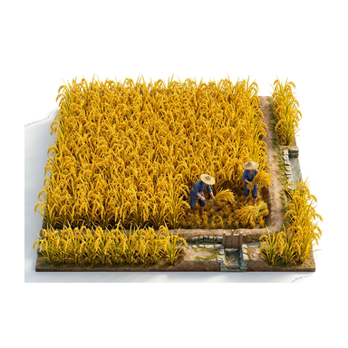
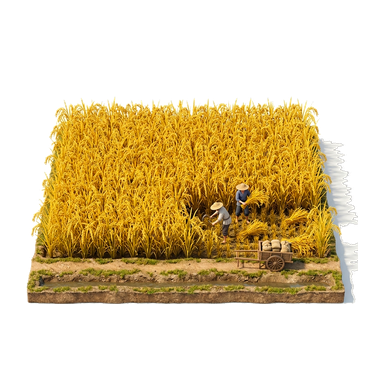

战略地图水稻田微缩模型 · 实机效果对比预览
★ 连成一片金黄水稻 · 纯透明落地 · 四周保留26px+安全呼吸空间 · 彻底解决边缘半截水稻截断问题
草坪地貌 (橄榄金绿 #686747)
黑土地貌 (深棕褐 #5c513e)
款式一：【石渠水网·金稻方阵】
正向 0 度 · 纯透明
前沿青石引水渠与木质水闸，连成一片的饱满金稻田，田间2名戴斗笠农夫挥镰割稻与运粮。四周留有 27px 间隔空间，零截断。

款式二：【丰收木车·金稻平原】
正向 0 度 · 纯透明
前沿平整田埂小道与细流泥沟，停靠满载粮袋的双轮运粮木车，农夫弯腰割稻捆扎。四周留有 26px 间隔空间，零截断。
